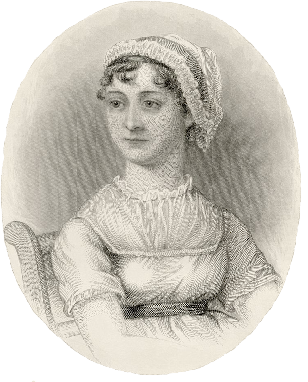

Jane Austen, born on December 16, 1775, is widely considered one of England’s foremost novelists. Austen lived a quiet life, though her brothers who were officers in the Royal Navy were instrumental in introducing her to the wider world through their travels and service. Austen's role in the privileged life of the landed gentry is reflected in all her fiction.
In her childhood, Austen began writing comic stories called The Juvenilia. Her first mature work was the novella Lady Susan, written at the age of 19. Austen's most famous novels were written in her twenties, starting with Sense and Sensibility followed by Northanger Abbey, which was not published until after her death.
Other classic novels including Pride and Prejudice, Emma and Mansfield Park were written in her thirties. Her final novel, Persuasion was completed shortly before her death at the age of 42.
Though the volume of her work does not compare with other famous English novelists such as Charles Dickens, her novels consistently rate high on the list of popular English novels. With several successful screen adaptions, Austen's popularity has only grown as modern audiences embrace the humor and intelligence of her main characters and her insight into the human condition.
Jane Austen died on July 18, 1817.